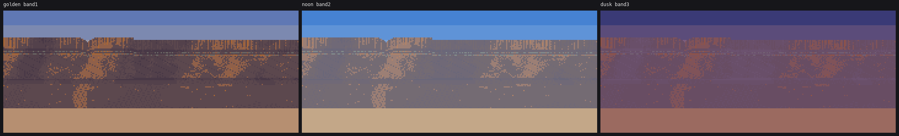
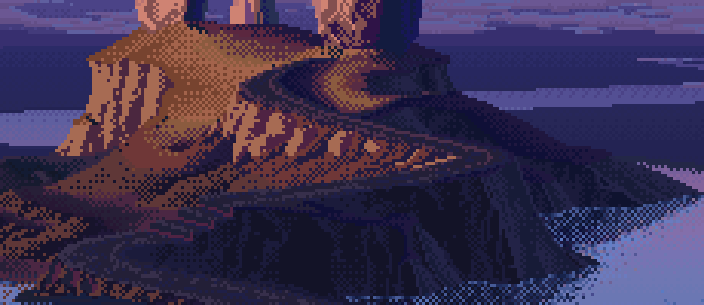
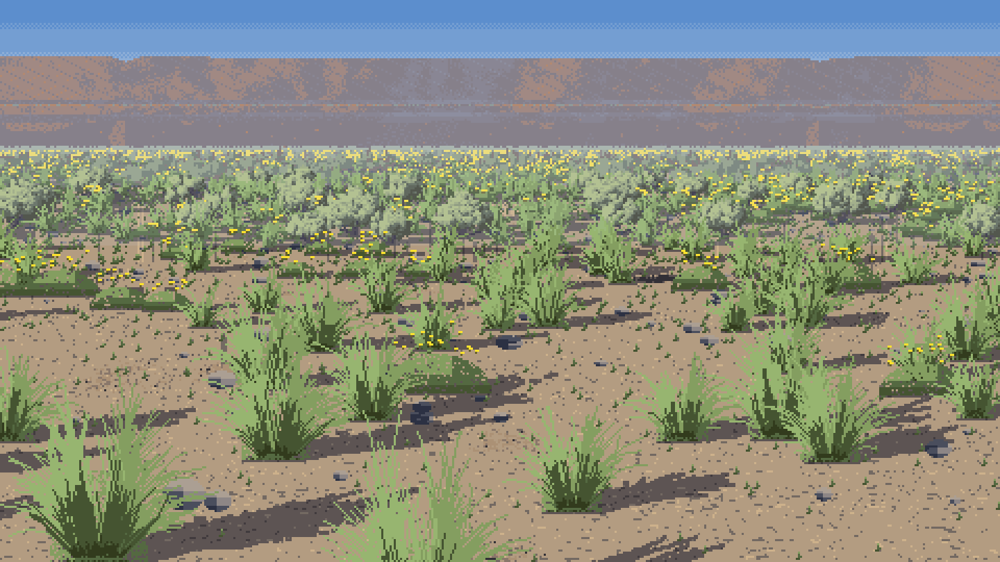
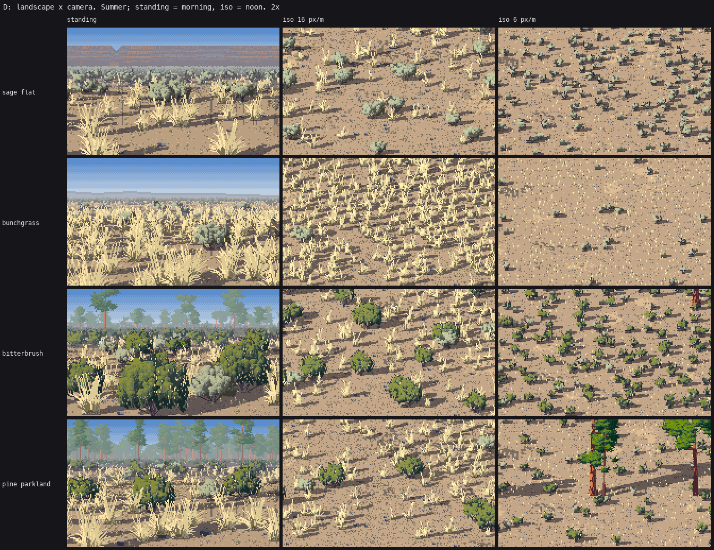
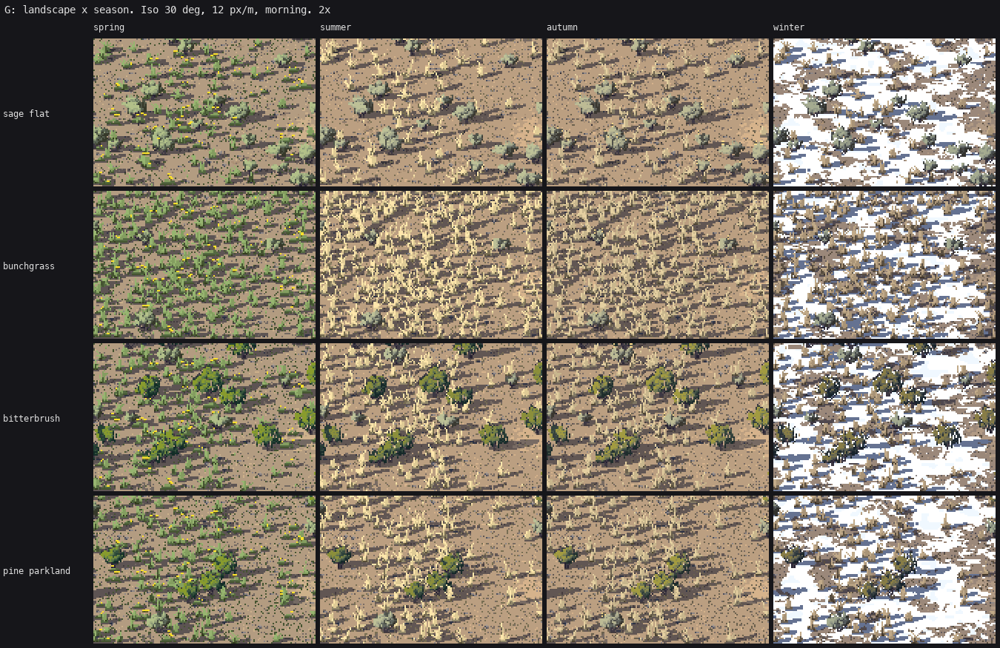
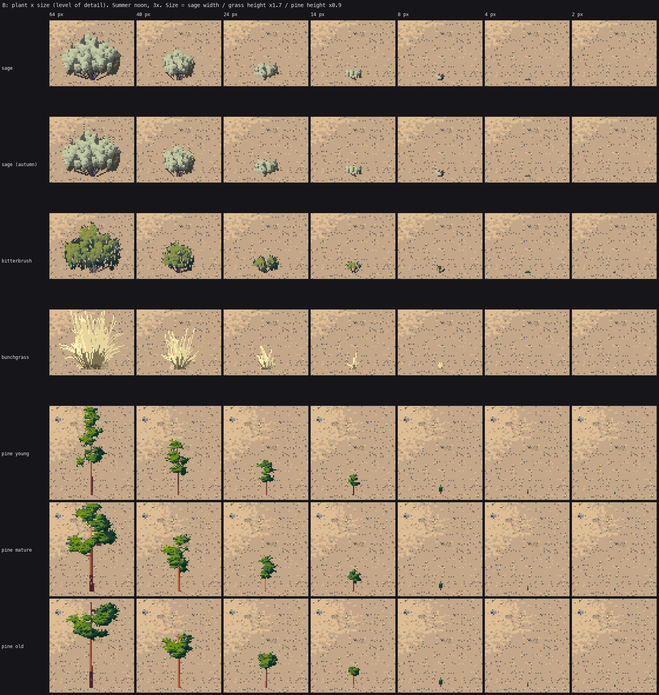

9. The tells
What still gives my pictures away, most visible first. Each has the real image and what I'd do. Most came from the second studio critic, and I agree with all of them.
1. The basalt rim is bands, not columns

s4_rim.py, final: the wall at golden (band 1), noon (band 2) and dusk (band 3).
In the Moses Coulee photos the whole read is columns: vertical prisms, each with a lit face and a dark face, varying widths, a ragged broken top, and a talus apron of fallen blocks with sage growing into it. Mine has horizontal strata running the full width with straight edges, vertical flutes that are only a texture, and a smooth apron with diagonal streaks.
How it got here: the first version was a picket fence of joints; the second added big lit and shadowed planes (the wall wanders in and out); the third added V11AM-style flutes, paired light and dark strokes of varying length:


The flutes helped and the bands never went away, because the tier boundaries are straight lines computed from the fractions of wall height. What I'd do: first, a master copy of V11AM's mesa, which I only looked at:

Then build the wall from prisms, not from rows. Each column gets a width, a top height (the ragged skyline comes from the tops) and two faces lit by the sun's side. Tiers become the places where one row of prisms stands back from the one below, and the talus becomes blocks fallen from specific columns.
2. Even spacing

The tussocks in the parkland foreground sit at near-uniform intervals, like a planted field. scene.scatter is a jittered grid, and the clustering and drift fields only thin it. Thinning a grid leaves grid spacing in the survivors. Real bunchgrass steppe has dense patches, bare gaps and lines along drainages. Use a clustered point process (parents, then children scattered around each parent) instead.
3. Sage at hero size is cauliflower

Page 3's end. The sprig grammar holds up to about 80 px. Above that the sprigs don't get narrower and the gaps don't open, so the bush becomes a heap of bumps. The spokes of straight trunks under it are ruled too.
4. The key is too pale

Page 5's end. Both Ferrari and the photo are deeper and more saturated at low sun than I am.
5. Balsamroot reads as tiles

The balsamroot clumps (the flat dark-green slabs with yellow dots) are half-ellipses of leaf, flat-topped, straight-bottomed, with the heads sprinkled on top. Balsamroot is a clump of big silver-green arrowhead leaves rising on stalks from the ground, with the yellow flowers held above them. It needs a leaf mark: upright arrowheads, lit on the sun face.
6. The wide iso view is busy, and has no distance

At 6 px/m (right column) every shrub is a dark dab with a shadow. Page 7's end: iso's band() is always 0, so none of the standing view's distance rules run in iso.
7. Iso snow is ruled

Winter column: long horizontal slabs of snow. Page 6's end.
8. Pines at middle distance are lollipops, and bitterbrush is a darker sage

Sheet B, rows 3 and 5–7. The pines at 14–24 px are a round green head on a stick, all alike. The bitterbrush is the sage painter with holes and a greener ramp.
9. The stage-0 copy's blades are whips

Page 2. His blades curl over within a few pixels. Several of mine run straight into the sky.
10. Tells in the code, not the picture
Found while writing these pages, and left as they are in the study's snapshot:
sage.SageParams.DEFAULThas two comments glued onto the wrong lines (cap_bias=2.6, # >1: caps crowd toward the clump tops # fraction of height at the bottom where sprays thin out). I edited the file with scripted string replacements, and they appended new lines after old comments.sage._spray_marksbegins withif True:, a leftover from turning a block into a function by re-indenting it in a script.grass.paint_tussock's docstring describes the old paired-blade painter, and its "dark strands first" comment says the opposite of what the sort key does.world.paint_groundstill says the undulation is "dithered only near its seams". It isn't any more.
None of these change a pixel. They're the price of editing by script at speed, and the fix is cheap: after any scripted edit, read the function you touched.